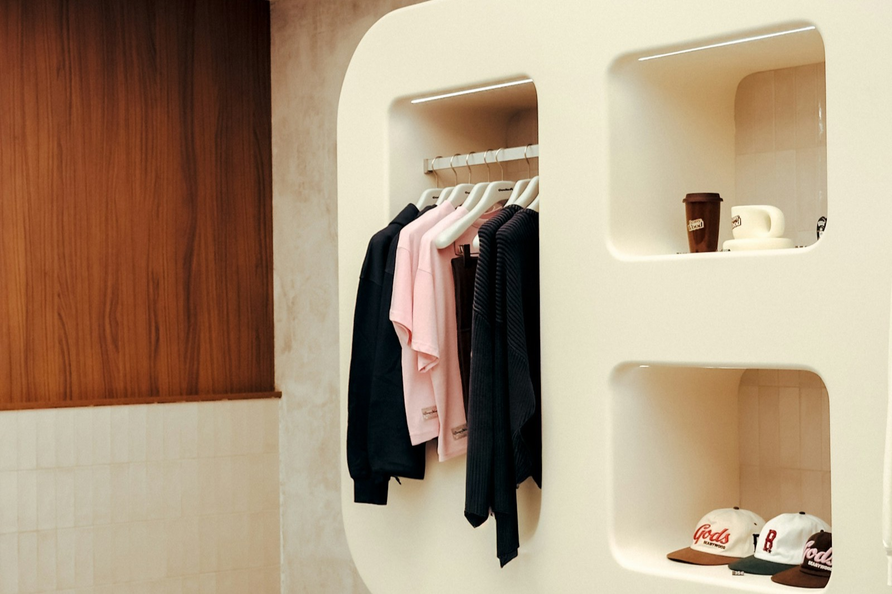
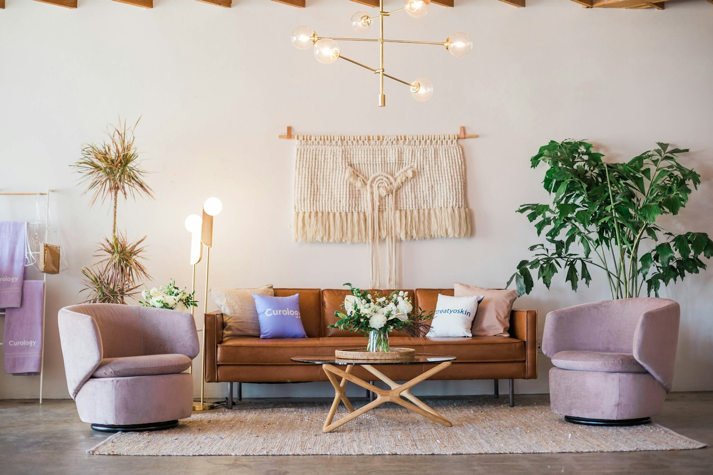

How to Drive Impulse Purchases In-Store
Impulse purchases account for a significant percentage of retail sales, with studies suggesting that the majority of in-store buying decisions are unplanned. For small-format specialty retailers, these add-on purchases can meaningfully shift daily revenue without requiring any additional foot traffic.
• The majority of in-store purchase decisions are unplanned — impulse is a core revenue driver
• Impulse buying is arousal-driven — music that elevates mood shifts decisions from deliberative to intuitive
• Sweet spot: 95–120 BPM, major key, medium energy, positive lyrical themes
• Placement tactics only work when the customer’s emotional state supports spontaneous buying

Placement, Signage, and the Physical Impulse Architecture
The proven impulse-buying tactics for brick-and-mortar retail are well-established.
Checkout zone merchandising. Small, affordable items clustered near the register capitalize on the customer's already-committed buying state. Gift items, accessories, consumables, and treat-yourself products perform best here.
Endcap and high-traffic placement. Products positioned at aisle ends or along primary walkways get maximum visibility. Rotating these displays weekly keeps them fresh and prevents shoppers from tuning them out.
Cross-merchandising and suggestive placement. Place complementary add-ons near primary products. A scarf displayed next to a coat. A phone case near electronics. A care kit next to shoes. The proximity creates the suggestion without requiring staff intervention.
FOMO signaling. "Limited time," "only 3 left," "bestseller" tags create urgency around impulse items. The customer's loss-aversion instinct does the rest.
All of these shape what the customer sees. None of them address how the customer feels in the moment of the decision.

Arousal, Energy, and the Emotional Trigger
Impulse buying is an arousal-driven behavior. Research in consumer psychology consistently links impulse purchases to elevated emotional states: excitement, happiness, self-reward, social confidence. When customers feel a positive emotional lift, their threshold for spontaneous purchases drops.
Music is one of the most direct ways to influence a customer's arousal state in real time. Moderate-to-uptempo music with positive valence, major keys, bright production, energetic feel, increases physiological arousal: heart rate rises slightly, mood elevates, decision-making shifts from deliberative to intuitive.
That shift from deliberative to intuitive is exactly what impulse purchasing requires. A customer in a deliberative state thinks "do I need this?" A customer in an intuitive state thinks "I want this." Same product, same price, different decision frame.
A deliberative customer asks "do I need this?" An intuitive customer asks "I want this." The music shifts which question your customer is asking — and it's shifting it right now, whether you planned it or not.
The lyrical dimension adds another layer. Lyrics about self-expression, spontaneity, living in the moment, and treating yourself reinforce the impulse mindset at a semantic level. The customer isn't consciously processing the lyrics, but the thematic environment contributes to the overall decision frame the same way visual merchandising does.
The practical balance for retailers: you want enough arousal to prime impulse decisions without pushing into agitation. Music that's too loud, too fast, or too intense makes customers feel rushed rather than inspired. The sweet spot for most specialty retail environments is moderate tempo, 95-120 BPM, major key, medium energy, with lyrics that lean positive and self-directed.
Sweet spot for impulse priming: 95–120 BPM, major key, medium energy, positive lyrical themes. Below that range the environment feels too calm. Above it, customers feel rushed rather than inspired.
Engineering the Impulse Environment
Entuned's Energize outcome mode targets the arousal state that primes impulse purchasing. The music parameters are tuned for moderate-to-uptempo grooves, major-key bias, bright production characteristics, and lyrical themes oriented toward spontaneity and self-reward.
This works in combination with your physical merchandising, not as a replacement for it. The checkout display still needs to be there. The endcap still needs to be stocked. But the customer arriving at that checkout display in an elevated, positive state is meaningfully more likely to grab the add-on item than the customer arriving in a flat or negative state.
Entuned refreshes the music weekly, which matters for impulse specifically because novelty contributes to arousal. A customer who's heard the same background music on their last three visits has stopped noticing it. A customer hearing something fresh, something that catches their ear even slightly, is in a more alert, more engaged state. That alertness transfers to product attention.
Start with Entuned Free. Target impulse-ready energy in your store.
Start Free